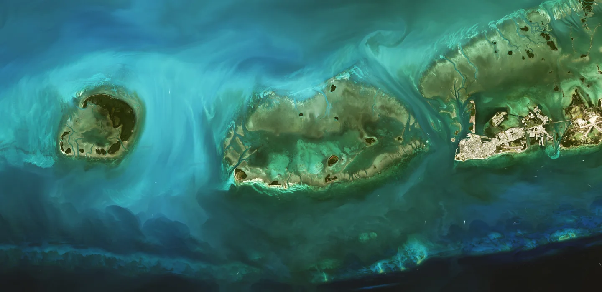

TerraTorch × Prithvi-EO
From satellite
pixels to model
tokens.
Explore six-band satellite imagery, see how it becomes a grid of patches, then run the Prithvi-EO foundation model with TerraTorch.

The learning path
Read the image.
Then read the model.
01Read a multispectral scene
Switch between visible light, a near-infrared composite, and NDVI. Find a patch where the near-infrared band is brighter than red, and see how that difference changes across dates.
Explore the bands02Follow pixels into the encoder
Prithvi-EO groups a 224 × 224 frame into 196 spatial patches. Each patch covers 16 × 16 pixels across all six bands. Two frames produce 392 patch tokens, plus one class token.
Inspect the patch grid03Compare embeddings across dates
Run the pretrained encoder and compare vectors from the same patch on two dates. A larger cosine distance flags a difference in the representation. Check the imagery for clues and use cloud and shadow quality masks in an operational analysis.
Run the modelInteractive lab
The patch explorer
Two HLS observations of the same site in Mexico. Switch layers, then select a patch to compare its reflectance, vegetation index, and Prithvi-EO embeddings.
Loading the HLS observations…
Selected patch
Row 9, column 4
Mean surface reflectance
Embedding distance is precomputed with the pretrained Tiny-TL encoder. Larger values indicate a greater change in the model’s representation of the patch. Compare the imagery for clues. The valid-pixel count tracks missing data. Cloud and shadow masking is a separate step.
Python lab
Run Prithvi-EO
on your machine.
Use Python 3.12 and the CPU-friendly Prithvi-EO 2.0 Tiny-TL encoder. Start with synthetic scenes, then try the HLS examples you explored above. GitHub repository access is required to get the Python source.
Open the GitHub repositoryPrepare the environment
From the lab directory, create and activate a virtual environment. The activation command below is for macOS and Linux. On Windows PowerShell, use .venv\Scripts\Activate.ps1.
python3.12 -m venv .venv
source .venv/bin/activate
python -m pip install -r requirements.txtInstall the CPU encoder and geospatial dependencies. On Apple Silicon, run only the second command.
python -m pip install torch==2.8.0 torchvision==0.23.0 --index-url https://download.pytorch.org/whl/cpu
python -m pip install -r requirements-model.txtInspect and encode
Inspect the synthetic inputs offline after installation. The first encoder run fetches the pretrained weights, about 129 MB.
python -m terratorch_lab inspect
python -m terratorch_lab encodeTry the real HLS sample
Download and prepare two aligned scenes. Compare the encoder’s patch differences with the spectral differences you saw in the explorer.
python -m terratorch_lab sample
python -m terratorch_lab inspect --input lab-output/hls-sample.npz --output-dir lab-output/hls
python -m terratorch_lab encode --input lab-output/hls-sample.npz --output-dir lab-output/hls